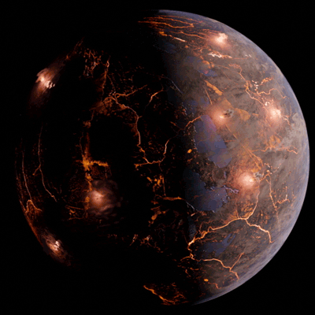

LP-791-18 d လို့ အမည်ပေးထားတဲ့ ဒီဂြိုဟ်မှာ ပူနွေးတဲ့ လေထု ရှိမှာမို့ ရေငွေ့တွေနဲ့ အရည်ပျော် နေတဲ့ ရေတွေ ရှိနေနိုင်တယ်လို့ ပညာရှင် တွေက ယူဆ ကြပါတယ်။
ဒီဂြိုဟ်ဟာ ကြယ်နီပု (red dwarf) လေး တစ်လုံးကို ပတ်နေတာ ဖြစ်ပါတယ်။ ဒီ ကြယ်နီပု လေးဟာ ကမ္ဘာကဆို အလင်းနှစ် ၉၀ လောက် အဝေးမှာ ရှိပါတယ်။
ဒီ ဂြိုဟ် ပတ်နေတဲ့ ရပ်ဝန်းဟာ habitable zone လို့ခေါ်တဲ့ သက်ရှင်သန်နိုင်တဲ့ ရပ်ဝန်းရဲ့ အစွန်းနားလေးမှာ ဖြစ်ပါတယ်။ Habitable zone ဆိုတာက ကြယ်တစ်စင်းကနေ အကွာအဝေး မနီးမဝေး သမမျှတတဲ့ အပူချိန် ရရှိတဲ့ ရပ်ဝန်း ဖြစ်ပါတယ်။
အခု တွေ့ရှိမှုဟာ နာဆာရဲ့ TESS ဂြိုဟ်တုကနေ ပေးပို့တဲ့ အချက်အလက် တွေနဲ့ Spitzer အာကာသ တယ်လီစကုပ် ကြီးကနေ ယခင် ပေးပို့ ထားခဲ့တဲ့ ပုံတွေကို အသေးစိတ် လေ့လာမှုကနေ ရှာဖွေ တွေ့ရှိ ခဲ့တာ ဖြစ်ပါတယ်။ နောက်ပြီး မြေပြင် အခြေစိုက် တယ်လီစကုပ် တွေက ရရှိတဲ့ အချက်အလက် တွေနဲ့လဲ ထပ်ဆင့် တိုက်ဆိုင် စစ်ဆေး ခဲ့ပါတယ်။
အခု အသစ်ရှာဖွေ တွေ့ရှိမှုကို မေလ ၁၇ ရက်နေ့ထုတ် Nature သုတေသန ဂျာနယ်ကြီးမှာ တင်ပြ ထားတာ ဖြစ်ပါတယ်။ ဒီ သုတေသန စာတမ်းကို University of Montreal မှာအခြေစိုက်တဲ့ Trottier Institute for Research on Exoplanets (iREx) က ပညာရှင် တွေက တင်ပြထားတာ ဖြစ်ပါတယ်။
ဒီ ဂြိုဟ်ဟာ သူ့ရဲ့ မိခင်ကြယ်နဲ့ tidally locked ဖြစ်နေပါတယ်။ ဆိုလိုတာက ဒီဂြိဟ်ရဲ့ မျက်နှာပြင် တဖက်ဟာ ကြယ်ကို အမြဲ ဦးလှည့်နေပြီး ကျန်တဖက် ကတော့ ကြယ်နဲ့ ဝေးရာကို အမြဲ လှည့်နေတာပဲ ဖြစ်ပါတယ်။ (ကမ္ဘာနဲ့ လလိုပေါ့)

နေ့ဖက်ခြမ်းရဲ့ အပူချိန်ဟာ အလွန် ပူပြင်းတာမို့ ရေဟာ အရေအဖြစ် ရှိနေနိုင်မှာ မဟုတ်ပါဘူး။ ညဖက်ခြမ်း ကတော့ ပုံမှန်ဆို အရမ်း အေးနေမှာမို့ ရေဟာ အမြဲ ခဲနေမှာ ဖြစ်ပါတယ်။ ဒါပေမယ့် ဂြိုစ်တစ်ခုလုံးကို ဖုံးလွှမ်းထားတဲ့ မီးတောင်တွေကြောင့် ညဖက်ခြမ်းရဲ့ အပူချိန်ဟာ ရေခဲမှတ်အောက် မကျပဲ လေထုထဲက ရေငွေ့တွေ ငွေ့ရည်ဖွဲ့ပြီး မိုးအဖြစ် ပြန်ကျလာမယ်လို့ ပညာရှင် တွေက ယူဆ ကြပါတယ်။
အခု ဂြိဟ်ဟာ ကမ္ဘာနဲ့ ယှဉ်ရင် အရွယ်အစား အနည်းငယ်ပဲ ပိုကြီးမယ်လို့ ယူဆ ရပါတယ်။
ဒီဂြိုဟ်ဟာ ဒီကြယ်ကို ပတ်နေတဲ့ တခုတည်းသော ဂြိုဟ်တော့ မဟုတ်ပါဘူး။ သူ့ကို ပတ်နေတဲ့ b နဲ့ c ဂြိုဟ်တွေ ရှိပါသေးတယ်။ (ကြယ်တစင်းကို ပတ်နေတဲ့ ဂြိုဟ်တွေကို ရှာတွေ့တဲ့ အစဉ်အတိုင် b, c, d အစ ရှိသဖြင့် နာမည် ပေးသွားပါတယ်။)
ကြယ်နဲ့ ပိုနီးတဲ့ b ဂြိုဟ်ဟာ ကမ္ဘာထက် ၂၀ ရာခိုင်နှုန်းလောက် ပိုကြီးပြီး ပိုဝေးတဲ့ c ဂြိုဟ်ကတော့ ကမ္ဘာထက် ၂.၅ ဆ ပိုကြီးပါတယ်။ c ဂြိုဟ်ရဲ့ ဒြပ်ထုကလဲကမ္ဘာ့ဒြပ်ထုထက် ၇ ဆ လောက် ပိုများပါတယ်။
အခု ရှာတွေ့တဲ့ d ဂြိုဟ်နဲ့ အရင် ရှာတွေ့ခဲ့တဲ့ d ဂြိုဟ်တွေဟာ ကြယ်ကို ဘဲဥပုံ လမ်းကြောင်းတွေနဲ့ ပတ်နေတာပါ။ ဒီတော့ မကြာခန ဆိုသလိုပဲ ဂြိုဟ်နှစ်စင်းဟာ အရမ်းကို နီးကပ် လာလေ့ ရှိပါတယ်။ ဒီလို နီးကပ် လာတဲ့ အခါတိုင်းမှာ c ဂြိုဟ်ရဲ့ ဆွဲငင်အားကြောင့် d ဂြိုဟ်ရဲ့ မျက်နှာပြင်ဟာ ရှည်မြောမြော ဖြစ်လာပြီး မျက်နှာပြင် မှာလဲ အက်ကွဲကြောင်းတွေ ဖြစ်လာပါတယ်။ ဒီ အက်ကွဲကြောင်း တွေကနေ ချော်ရည်ပူတွေ စိမ့်ထွက်လာပြီး မီးတောင်တွေလဲ အများအပြား ဖြစ်ပေါ် လာပါတယ်။
အခုတွေ့တဲ့ ဂြိုဟ်ဟာ habitable zone ရဲ့ အတွင်းစည်း နားမှာ ရှိနေပါတယ်။ သူ့ရဲ့ များပြားလှတဲ့ မီးတောင် လှုပ်ရှားမှုတွေက ထွက်လာတဲ့ ဓါတ်ငွေ့တွေကြောင့် ဒီဂြိုဟ်မှာ လေထု ရှိလိမ့်မယ်လို့ ပညာရှင် တွေက ယုံကြည် ကြပါတယ်။
ညဖက်ကျတဲ့ အခြမ်းမှာ အပူချိန် ကျဆင်း သွားမှာမို့ ရေငွေ့တွေဟာ ငွေ့ရည်ဖွဲ့ပြီး မိုးအဖြစ် ပြန်ရွာကျ လာနိုင်ပါတယ်။ ဒါ့ကြောင့် ညဖက်ခြမ်းမှာ ရေ ဟာ အရည်အဖြစ် ရှိနေနိုင်ပါတယ်။
ဒီ d ဂြိုဟ်နဲ့ c ဂြိုဟ် တွေကို James Webb တယ်လိီစကုပ် ကြီးနဲ့ အသေးစိတ် လေ့လာဖို့ ခွင့်ပြုချက် ကျပြီးပြီလို့ သိရပါတယ်။ ဒါဟာ ကမ္ဘာပေါ်မှာ မီးတောင်တွေကြောင့် သက်ရှိတွေ ဖြစ်ပေါ်လာတယ် ဆိုတဲ့ သီအိုရီမှန်မမှန် စမ်းစစ်ဖို့ အရေးပါတဲ့ သီအိုရီ တစ်ခု ဖြစ်တယ်လို့ ပညာရှင် တွေက ထောက်ပြကြ ပါတယ်။
Ref: Volcano World: Earth-Size Planet Discovered by Astronomers May Be Carpeted With Volcanoes | Scitech Daily